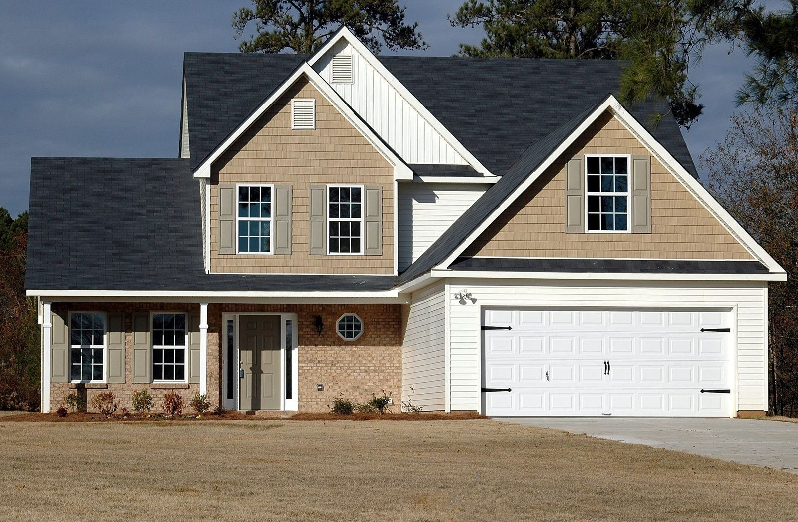
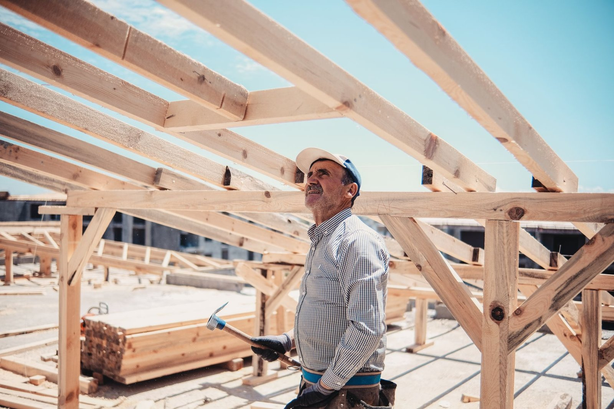
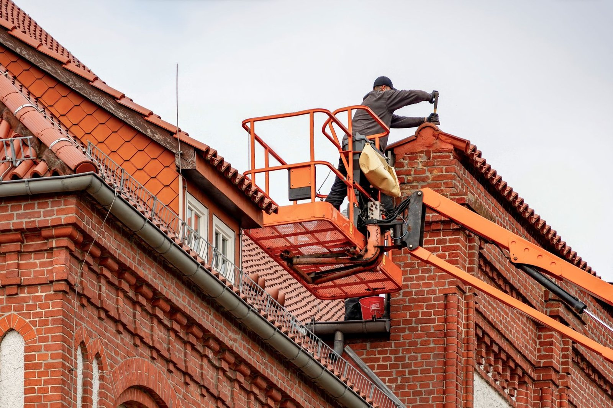
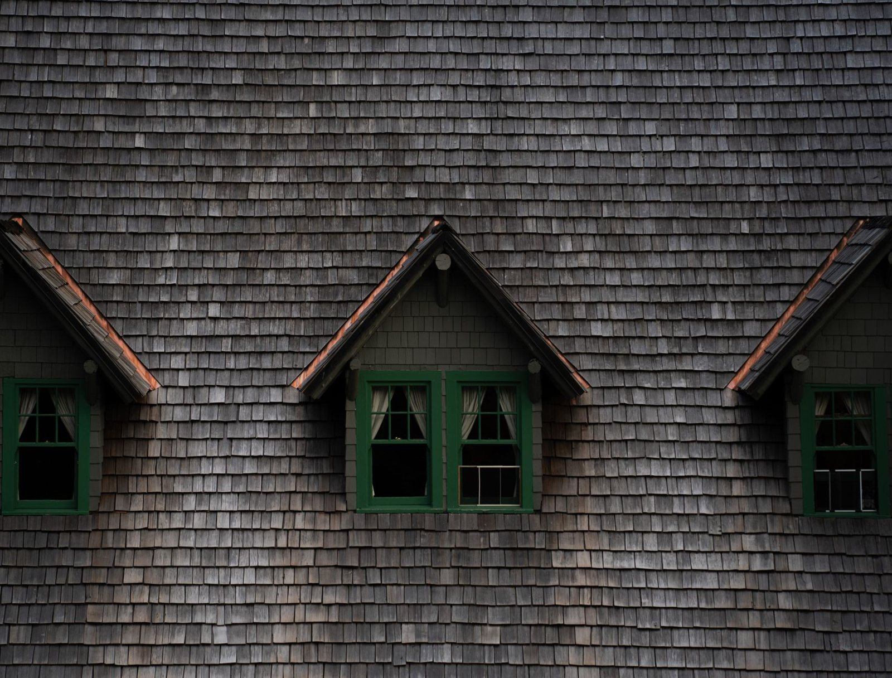
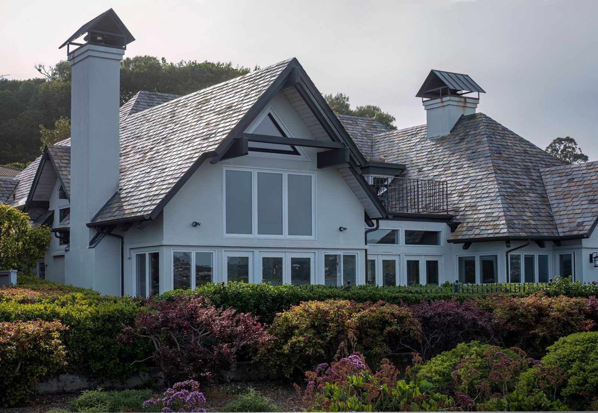
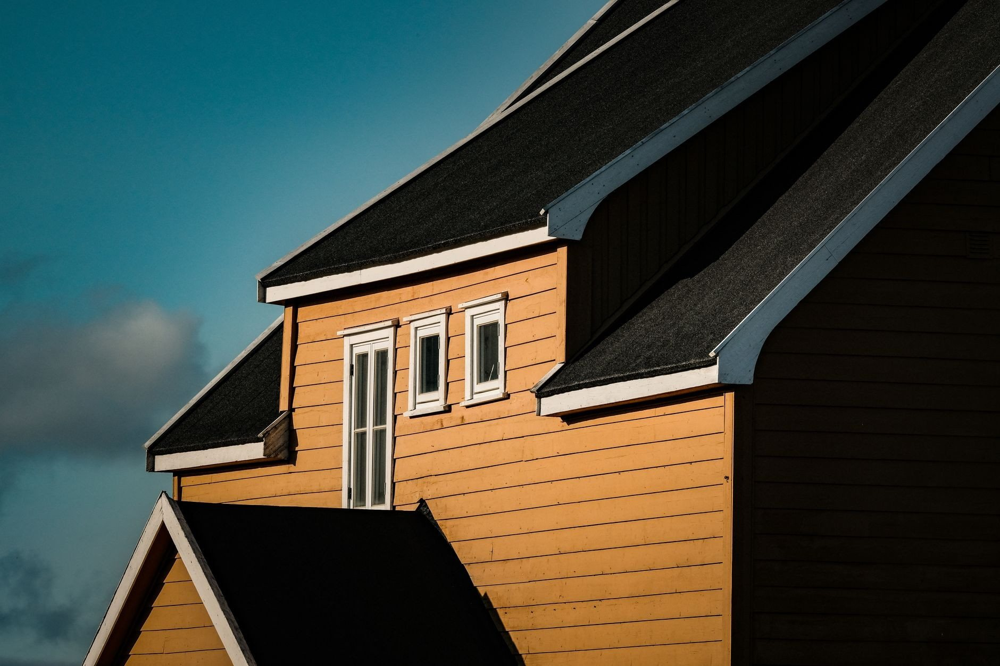

Od więźby po rynny

Pokrycia dachowe
Stare pokrycie do zdjęcia albo nowy dom czeka na dach? Kładziemy blachodachówkę, dachówkę ceramiczną i betonową oraz blachę na rąbek - z membraną, łatami i kontrłatami, nie samą blachę na stare deski. Pokrycie dobieramy do kąta połaci i konstrukcji, a nie do tego, co zalega w hurtowni.

Remonty i naprawy dachów
Ciemna plama na suficie po każdym deszczu? Szukamy miejsca, którędy naprawdę wchodzi woda - po krokwi potrafi spłynąć kilka metrów od plamy - i często to obróbka przy kominie, nie pokrycie. Naprawiamy przyczynę, a po pierwszym porządnym deszczu sprawdzamy, czy zostało sucho. Dopiero wtedy uznajemy robotę za skończoną.

Więźba dachowa
Zmieniasz pokrycie na cięższe albo adaptujesz poddasze? Zanim na dach wjedzie dachówka, sprawdzamy, czy więźba to udźwignie - liczy się przekrój i rozstaw, nie dobre chęci. Wymieniamy podgniłe krokwie i murłaty, wzmacniamy wiązary tam, gdzie trzeba - i dopiero wtedy zamykamy dach na dobre.

Rynny i obróbki blacharskie
Rynna przelewa się w jednym miejscu albo odchodzi od okapu? Ustawiamy spadki na nowo, wymieniamy skorodowane odcinki i poprawiamy mocowania, zamiast od razu sprzedawać całe orynnowanie. Obróbki komina, kosza i okapu robimy z blachy dobranej do pokrycia - dach wygląda na skończony, bo jest skończony.

Okna dachowe i podbitka
Podbitka zamyka dach od spodu: równa linia przy okapie, kratki wentylacyjne i koniec z ptakami pod pokryciem. Robimy podbitki z PVC i drewna - deski malujemy przed przykręceniem, nie po. Wszystko na ruszcie, z zachowanym przepływem powietrza - dach musi oddychać, inaczej więźba zaczyna gnić.

Dachy płaskie i papa
Garaż, taras albo płaski dach nad domem? Zgrzewamy papę termozgrzewalną i układamy membrany z wyprowadzonymi spadkami, żeby woda nie stała w kałużach na środku. Stare, spękane warstwy zrywamy albo zostawiamy jako podkład - zależnie od tego, co pokaże odkrywka, nie od widzimisię.
Która z usług Cię interesuje?
Napisz, co chcesz zrobić - odpowiemy z propozycją i wyceną.